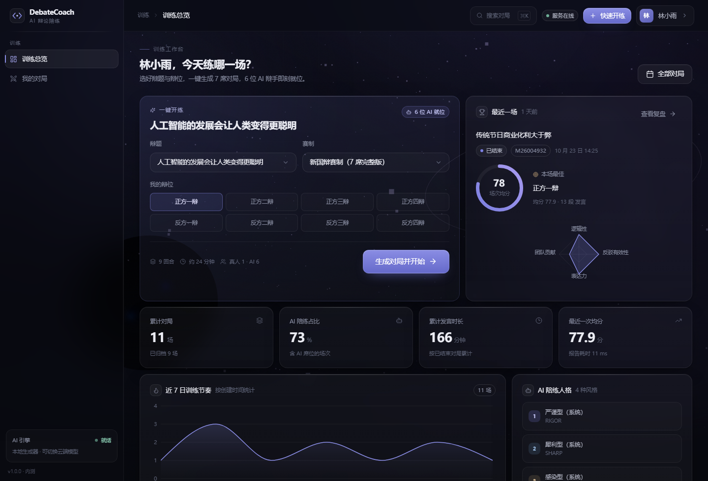
DebateCoach · AI 辩论教练
自建 Agent 工作流的辩论训练平台：一键生成七席对局、AI 与真人混排座位、实时发言转写，赛后自动出具四维能力评分报告。
Agent 主线 · 全栈自研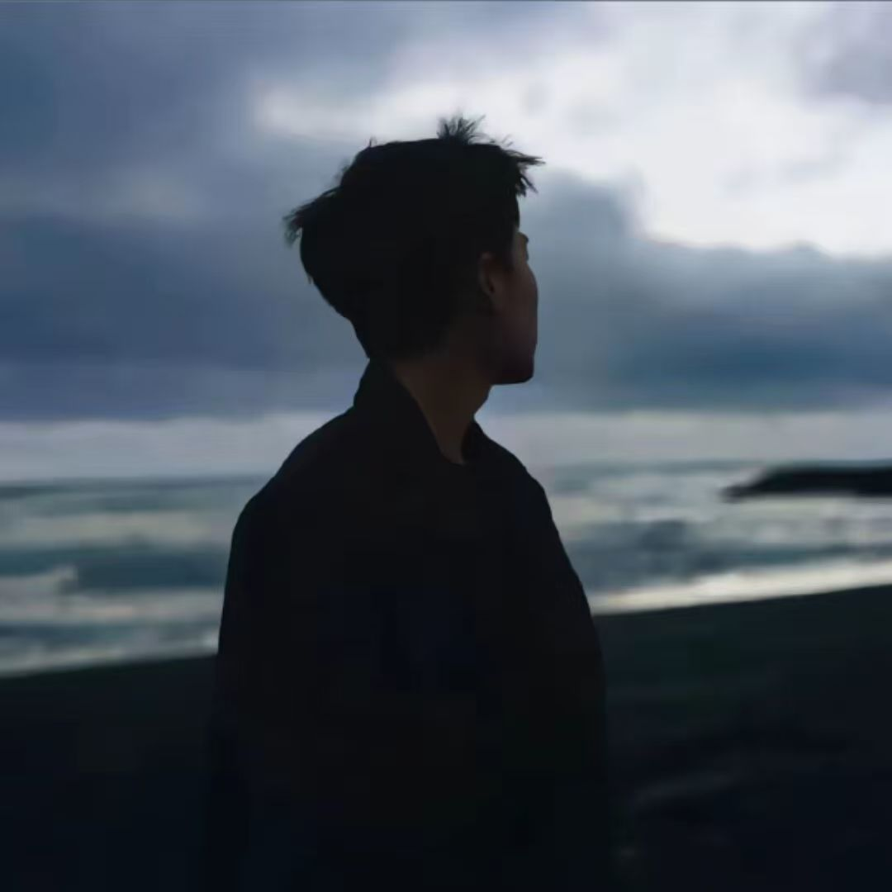
数字媒体技术专业 · 目标岗位：Agent 开发工程师
山东女子学院数字媒体技术专业本科生，班长。三年学业成绩专业第一（绩点 4.26 / 综测 97.59）， 两获国家奖学金；把大模型能力做成真正可用的产品，是我现在最想做的事。
从网页前端到图像算法，再到 Agent 应用开发，我在一条主线上持续深入。
我的专业是数字媒体技术，核心课程覆盖数据结构、算法设计、Web 前端开发与计算机图形学。 课堂上打下的前端基础，让我能把算法与模型真正落到用户能点、能看、能用的界面上。
学习方向上，我目前聚焦图像算法与Agent 应用开发： 一方面通过数学建模与算法竞赛训练建模和编码能力；另一方面用自建的 Agent 工作流完成了落地项目， 并在其中接入 RAG 知识问答，解决模型「答不准、答不实」的问题。
兴趣爱好是算法竞赛、开源项目与长跑。竞赛让我习惯在有限时间里把问题拆清楚， 长跑则提醒我：稳定的节奏比短期的爆发更可靠。
六个代表性作品与竞赛成果，把鼠标移到卡片上可以看到放大效果。

自建 Agent 工作流的辩论训练平台：一键生成七席对局、AI 与真人混排座位、实时发言转写，赛后自动出具四维能力评分报告。
Agent 主线 · 全栈自研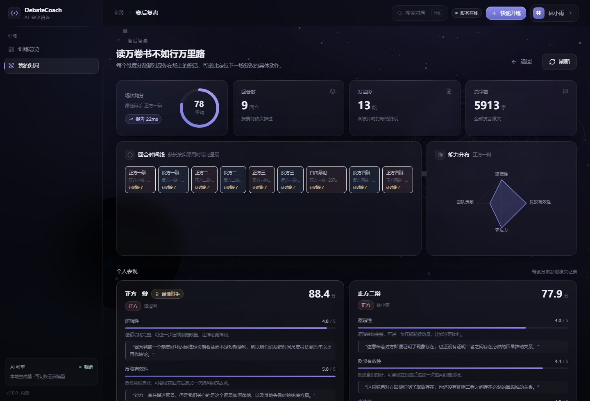
把一场对局的 13 个发言段拆成可定位的评分证据：逻辑性、反驳有效性、表达力、团队贡献四维打分，并给出下一场可执行的改进动作。
LLM 评分 · 证据可追溯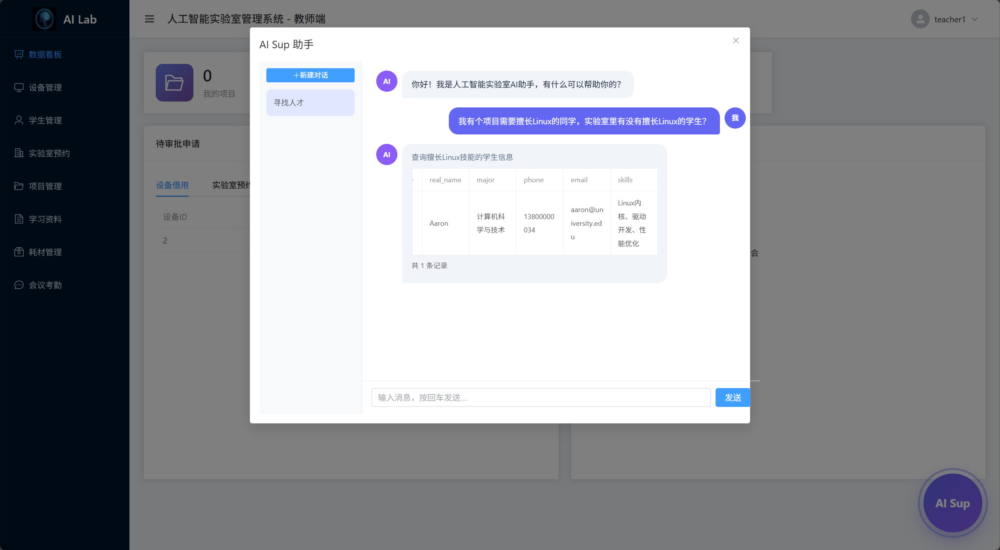
基于自建 Agent 工作流的人工智能实验室管理信息系统：12 张数据表、四类角色权限，教师端接入 RAG 知识问答，按技能标签检索学生。
计算机设计大赛 · 国家级二等奖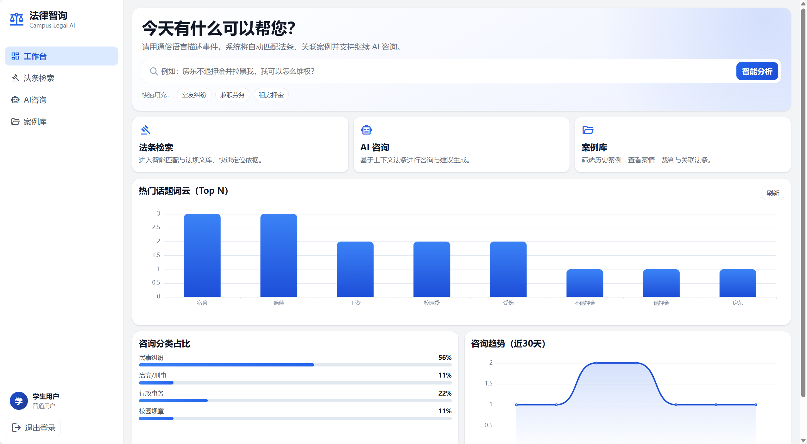
面向校园场景的法律咨询系统：自然语言描述即自动匹配法条、关联案例并生成建议，配套热词词云与咨询分类趋势看板。
RAG 检索 · 法条关联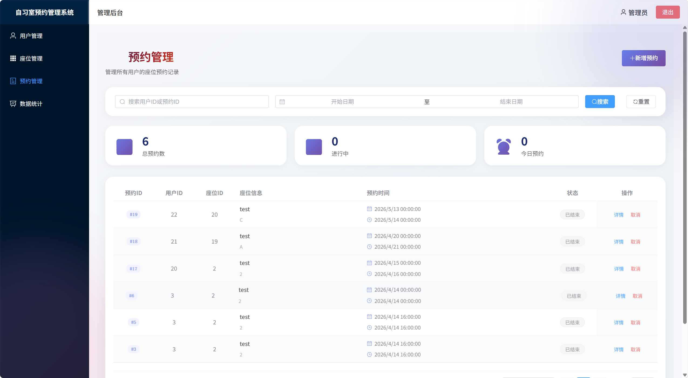
座位预约的完整后台：用户与座位管理、预约记录的筛选与状态流转、数据统计看板，支持按用户与座位双维度检索。
Java 后端 · 管理端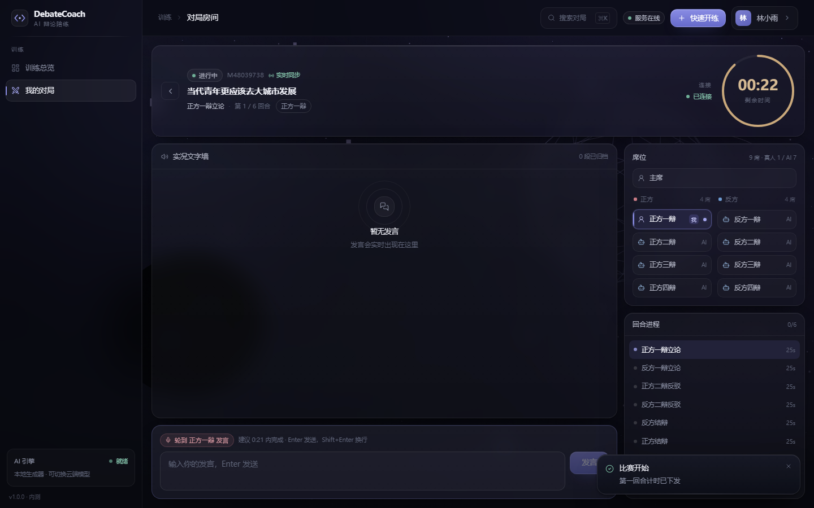
九席对局的实时现场：倒计时、实况文字稿、回合进程与座位状态同步推进，AI 对手按人格模板接替发言。
实时同步 · 多智能体累计 8 项国家级、15 项省级、30 项校级奖项，以下为代表性证书与荣誉。
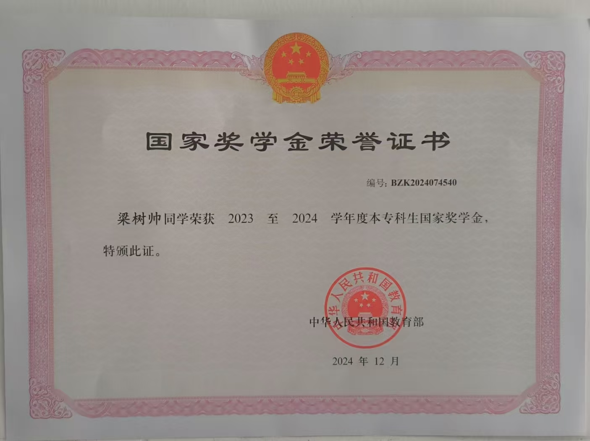
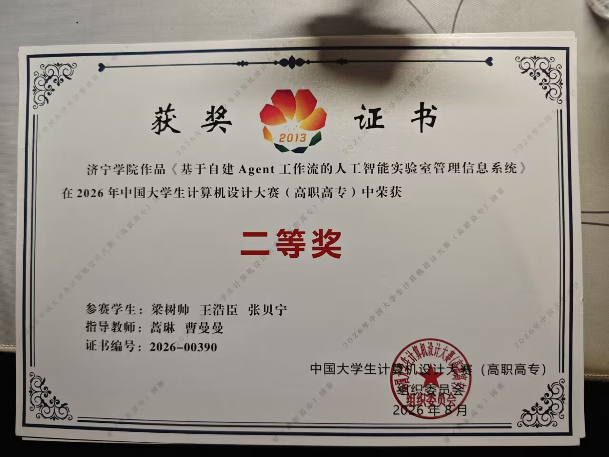
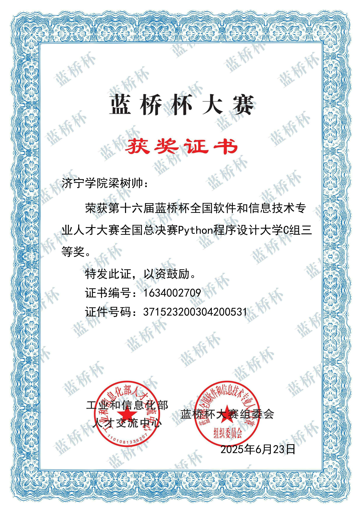
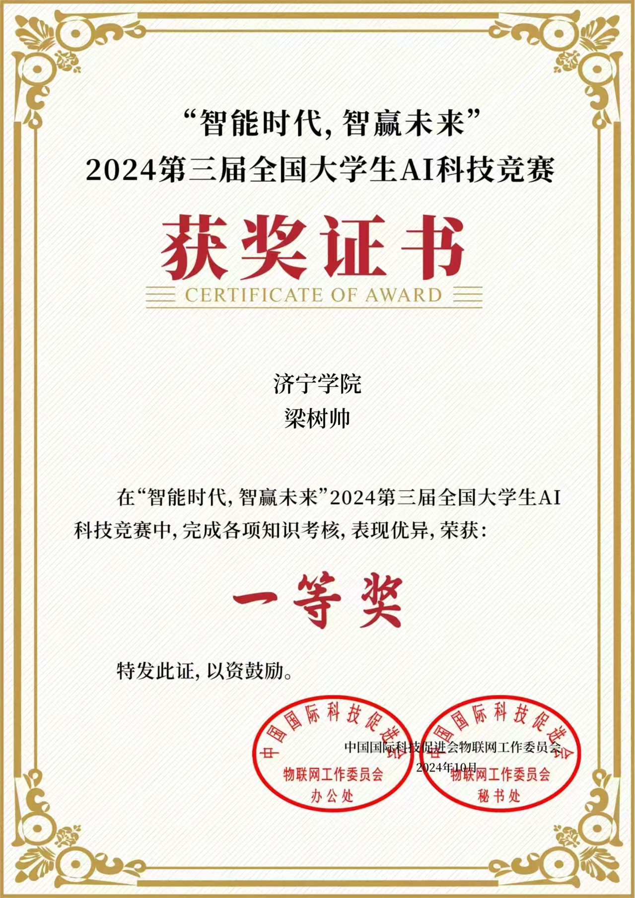
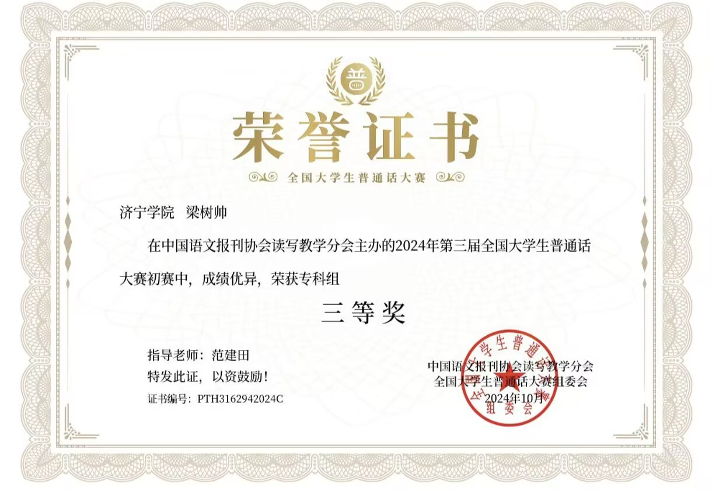
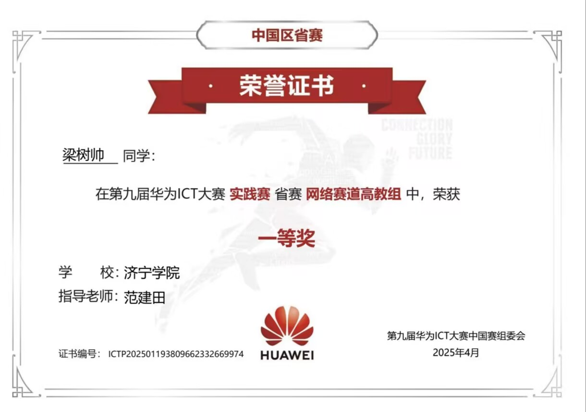
如果你想聊 Agent 应用、图像算法或者竞赛，欢迎在这里留言。